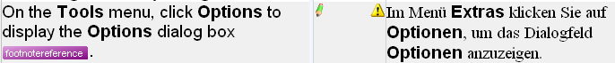
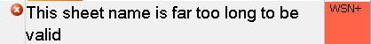
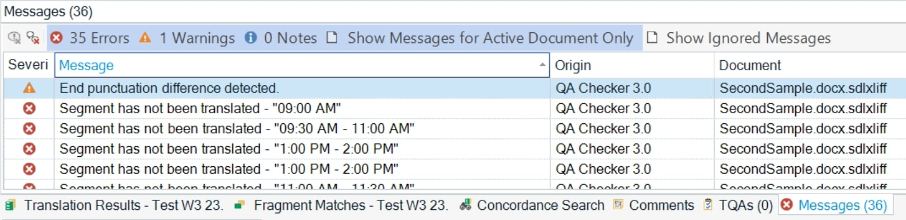

Verifying files
You can verify files against specific criteria. A common example is tag verification, which detects missing tags in the translation. To add verification to your file type plug-in, develop an additional verifier plug-in.

Interactive verification shows a yellow warning icon next to the target segment when the translation is missing an inline tag.
Example: Verify Microsoft Excel worksheet names
Microsoft Excel worksheet names cannot exceed 31 characters. If a translator enters a longer worksheet name, Trados Studio cannot generate the native target file from the intermediary document. The standard Microsoft Excel file type plug-in checks this limit and generates an error message when the translation exceeds it.

The interactive verifier in the Microsoft Excel file type plug-in shows a red error icon next to the target segment when the translated worksheet name exceeds 31 characters.
Trados Studio also lists the error in the Messages window. The message includes the error description, the file that contains the issue, and the file type plug-in that reported it. When the user double-clicks the message, Trados Studio opens the exact segment in the side-by-side editor.

Run verification
Verification can run interactively when the user confirms a segment. If the verifier finds a problem, it displays a symbol next to that segment: error (red), warning (yellow), or note (white). In the Excel worksheet example, the verifier reports an error because the issue prevents target file generation.
Users can also run verification for an entire document from Tools > Verify. To verify multiple documents, run the Verify batch task. The batch task generates a detailed report for the selected documents.